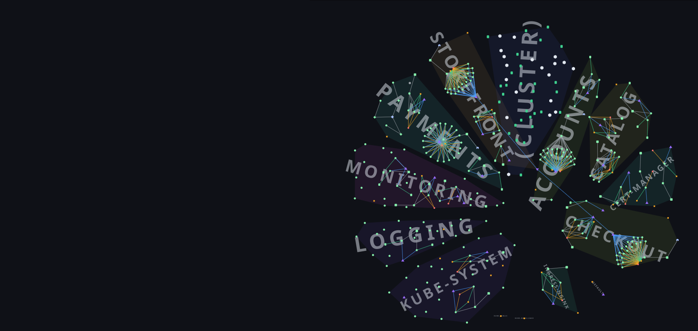
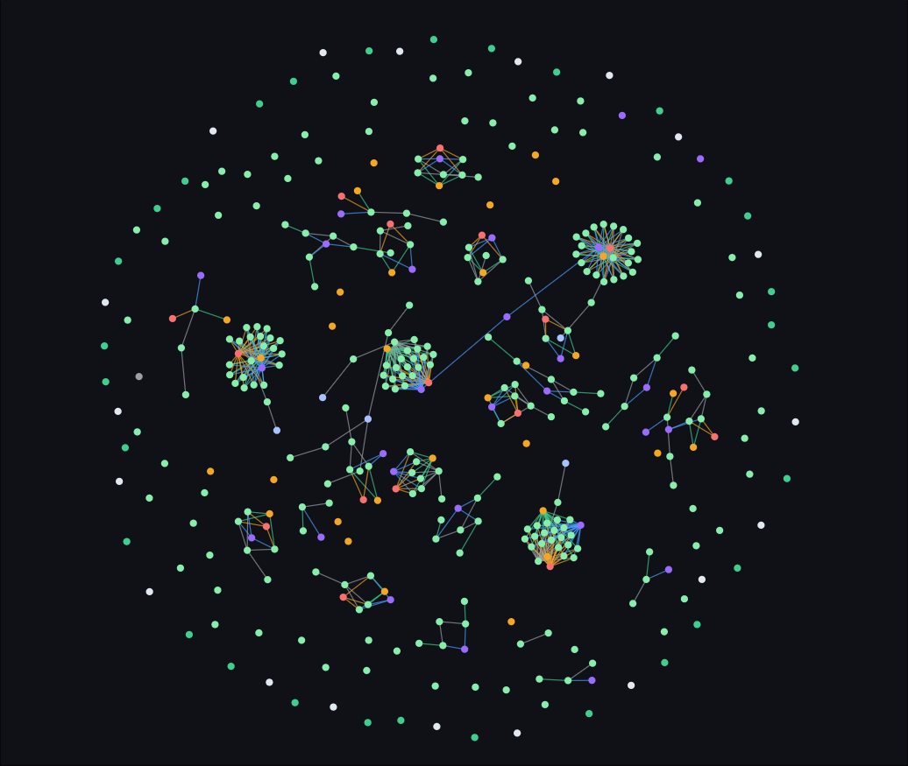
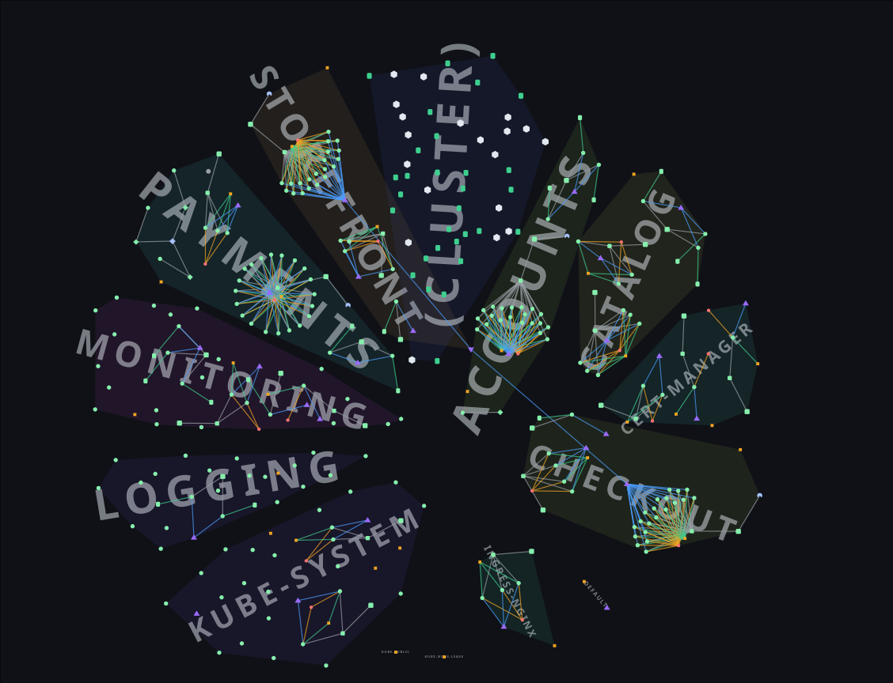
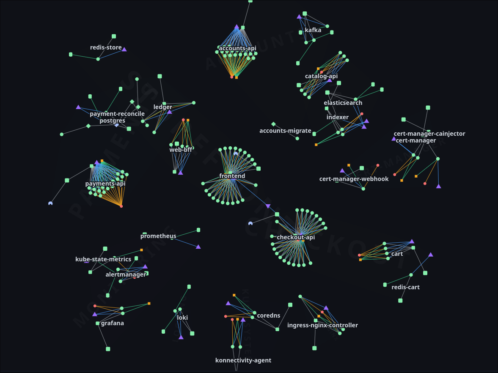
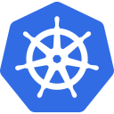
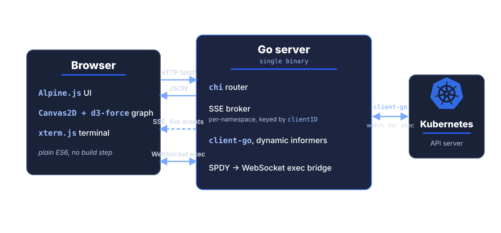

Every resource, every connection, drawn live, no polling. Built for Kubernetes operators who want to see the cluster, not parse it.
$ kubectl get pods -A -o wide NAMESPACE NAME READY STATUS RESTARTS AGE IP NODE checkout checkout-api-7d9c-q4l 2/2 Running 0 3d 10.42.7.183 worker-3 checkout checkout-api-7d9c-x2m 2/2 Running 0 3d 10.42.7.184 worker-3 checkout checkout-api-7d9c-7vn 2/2 Running 0 2d 10.42.7.185 worker-5 checkout checkout-worker-44tp 1/1 Running 1 5d 10.42.7.190 worker-2 checkout checkout-worker-9hbf 0/1 CrashLoop 6 4m 10.42.7.191 worker-2 checkout checkout-migrate-rd2 0/1 Completed 0 1h 10.42.7.193 worker-5 payments payments-api-66bd-h2c 1/1 Running 0 7d 10.42.4.41 worker-1 payments payments-api-66bd-q9s 1/1 Running 0 7d 10.42.4.42 worker-1 payments payments-worker-2fc8-l4d 1/1 Running 0 7d 10.42.4.55 worker-1 payments payments-pg-0 1/1 Running 0 7d 10.42.4.61 worker-4 accounts accounts-api-9ka-tp9 1/1 Running 0 6d 10.42.5.10 worker-2 accounts accounts-api-9ka-2gh 1/1 Running 0 6d 10.42.5.11 worker-2 accounts accounts-db-0 1/1 Running 0 14d 10.42.5.21 worker-4 catalog catalog-api-aa1-h44 1/1 Running 0 1d 10.42.6.30 worker-5 catalog catalog-search-0 1/1 Running 0 1d 10.42.6.40 worker-5 storefront storefront-7c9-l44 1/1 Running 0 9h 10.42.8.12 worker-3 storefront storefront-7c9-x6m 1/1 Pending 0 9h <none> <none> monitoring prometheus-0 2/2 Running 1 21d 10.42.9.12 worker-4 … 124 more pods, 17 kinds, 8 namespaces. answer is in here somewhere.

A Kubernetes cluster is a dense graph of interdependent resources.
kubectl shows it as flat text, one query at a time, so
the relationships between Pods, Services, and config end up
living in your head. KubeAtlas connects to the API,
watches every resource, and streams every change live, drawn as
one map, in your browser.




One Go binary. Informers watch the API; an SSE broker fans live events to browser clients, scoped per namespace.
Validated on two reproducible, KWOK-simulated clusters that seed in about a minute. One is production-shaped: 19 nodes, ~130 pods, StatefulSets with PVCs, sidecars, and live metrics. The other is fault-injected: CrashLoop, OOMKilled, ImagePullBackOff, Pending, stuck-Terminating, and a NotReady node, each failure pinned by a label-keyed KWOK Stage so it does not self-heal during a walkthrough. Every state was verified end-to-end through the live interface.
Canvas2D + d3-force with viewport culling and a uniform-grid spatial index; semantic-zoom LOD keeps the graph legible from the namespace-territory view down to individual pods.
A focused, real-time visual layer over Kubernetes, built to complement your workflow, not replace it. A deliberately bounded scope keeps it fast and safe.